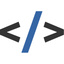
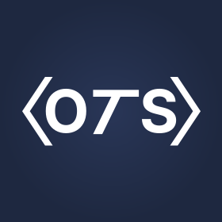
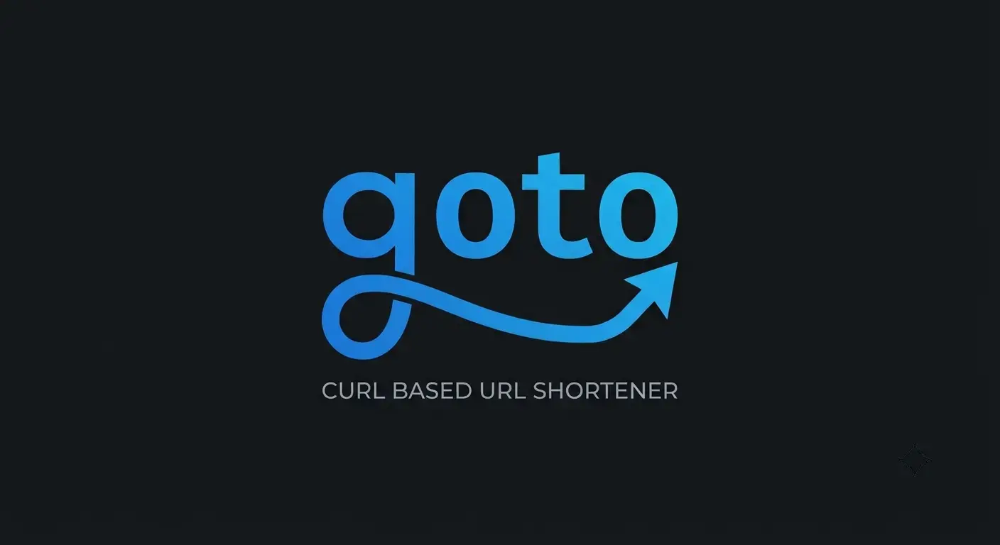
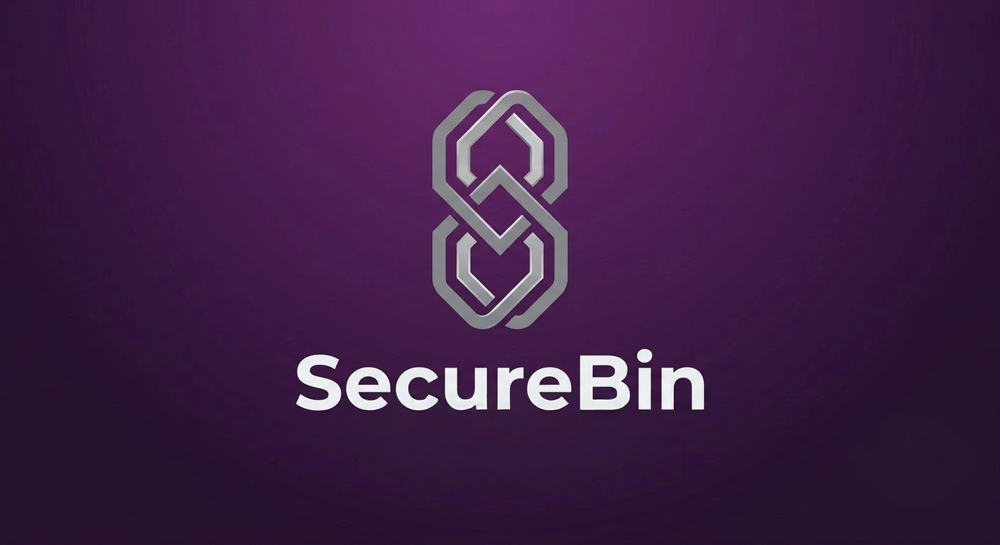
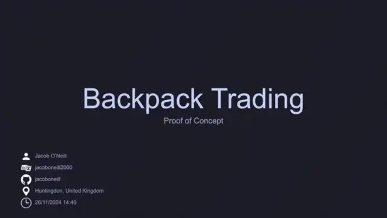
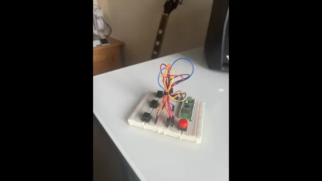

Hi, I'm Jacob
 Open to work · Software engineer roles
Open to work · Software engineer roles
 England, United
Kingdom
England, United
Kingdom
Software engineer with nearly three years of experience building production systems across IoT, industrial compliance, and e-learning. Strongest in TypeScript and Python, building end-to-end from API and database design through to deployment, and comfortable across the full stack from embedded firmware to deployment infrastructure.
Currently contracting through O'Neill Technology Solutions and looking to join an engineering team. I've been the only engineer in the room for far too long and want to collaborate, learn, and deliver on a long-term project.
-

TypeScript -

React -

Python -

PostgreSQL -
Docker -

Linux -
Go -

HTMX
Work
-

O'Neill Technology Solutions
Independent Software Contractor
Jan 2025 - Present
- Sole developer on an ATEX industrial compliance platform for CGS Engineering (Jan 2025 - Mar 2026). Owned the full lifecycle from requirements gathering through architecture, implementation, and technical documentation.
- Built a containerised Flask, React, PostgreSQL, and Caddy web application serving multiple client organisations with role-based access control and white-label theming. Enabled the client to scale from a service-based to a product-based business model.
- Sole developer building a modern xAPI/cmi5 e-learning framework (TypeScript, Preact, Vite) for Front Foot Creative, streaming 20GB+ video assets from Cloudflare R2 and deploying to Cloudflare Pages via Wrangler and GitHub Actions for CI/CD.
- Earlier e-learning work included a custom SCORM 2004 content generation framework published as a private npm package (Preact, Vite) and onboarding non-technical clients onto TalentLMS with GDPR/DPA compliance and German, Polish, and Romanian localisations.
- Incorporated O'Neill Technology Solutions (Jan 2026), handling client scoping, contract negotiation, and delivery directly.
-
Bioscope Technologies
Lead Software Developer
Jan 2022 - Mar 2023
- Led end-to-end development of IoT monitoring system: electronic design, embedded firmware (C++), backend APIs (Node.js and Express), frontend dashboard (React), and deployment (Linux and Docker).
- Built ESP32 sensor nodes streaming pH, temperature, and ORP data via WebSockets to a real-time dashboard for scientists.
- Automated manual measurement process, enabling scientists to focus on R&D with projected savings of £250k–£500k per year per factory.
Projects

goto
A terminal-first URL shortener made for curl. Mint a short link, get redirected by the short link and go to the stats endpoint to get 24h and 7d analytics. Built with Go, SQLite (SQLC), and structured logging with 90% test coverage.

SecureBin
An end-to-end encrypted pastebin with client-side AES-256-GCM encryption via the Web Crypto API. The server only ever stores ciphertext. Built with Go, Templ, HTMX, and SQLite.

Backpack Trading
An algorithmic trading simulator that applies the unbounded knapsack algorithm to portfolio optimisation, featuring a web scraper, trading bot, and data visualiser built in Python.

pico-bios-kbd
A four button USB HID keyboard built on a Raspberry Pi Pico for headless BIOS navigation.